iEEGLAB step by step
CCEP analysis through the EEGLAB menus. Each step: what to do, what you should get, and the window or figure that opens. Part A is stereo-EEG, Part B is ECoG.
1. Install
- Install EEGLAB. Clone
iEEGLAB into
eeglab/plugins/, or download it and unzip it there: release 1.2.0 does not have all the steps below yet. From , install MEF3 (Part A) and bva-io (Part B). Part B draws the ECoG contacts on fsaverage: FreeSurfer has it, or get it once from Python withimport mne; mne.datasets.fetch_fsaverage().Mac with Apple Silicon: compile the MEF3 reader (instructions). - Start EEGLAB, then .
ExpectAn iEEGLAB menu right of Help. Nothing required is missing. (also at the bottom of the iEEGLAB menu) opens this page, the README, the tutorial script, and the help of each menu.
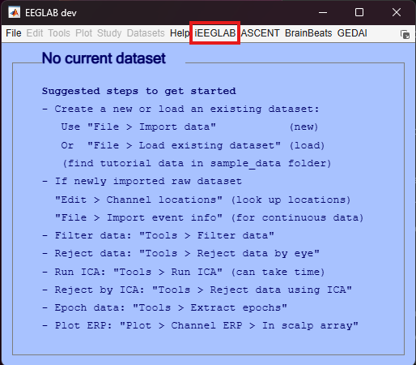
Command line
eeglab ieeglab_check_install
2. Data
Nothing to download: two small extracts of OpenNeuro recordings ship with iEEGLAB, at their native
sampling rate, each in one folder with its BIDS sidecar files: tutorial/seeg
(ds004696 sub-02: 17 contacts, 3 stimulation sites, 34 pulses)
and tutorial/ecog (ds004080 sub-ccepAgeUMCU02:
20 contacts, 3 sites, 30 pulses).
One participant per part, with the AWS command line (no account needed), or from ds004696 and ds004080. Keep the folder structure.
aws s3 sync --no-sign-request s3://openneuro.org/ds004696 ds004696 --exclude "*" --include "sub-02/*" --include "derivatives/freesurfer/sub-02/*" --include "dataset_description.json" --include "participants.tsv"
aws s3 sync --no-sign-request s3://openneuro.org/ds004080 ds004080 --exclude "*" --include "sub-ccepAgeUMCU02/ses-1/ieeg/*run-041456*" --include "sub-ccepAgeUMCU02/ses-1/ieeg/*_ses-1_electrodes.*" --include "sub-ccepAgeUMCU02/ses-1/ieeg/*_ses-1_coordsystem.json" --include "dataset_description.json" --include "participants.tsv"3. Part A: sEEG (ds004696, sub-02)
- : in the iEEGLAB folder,
tutorial/seeg/sub-02_ses-ieeg01_task-ccep_run-01_ieeg.set. : select theds004696folder, then sub-02's recording. Keep the defaults.Expect17 channels at 2048 Hz, 3.2 minutes.About 2 minutes, with the progress in the command window and a progress bar: 237 channels at 2048 Hz.

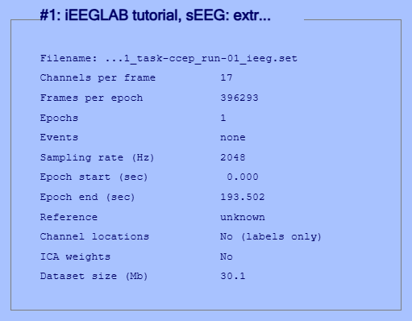

Command line
tut = fullfile(fileparts(which('eegplugin_ieeglab')), 'tutorial', 'seeg'); EEG = pop_loadset('filename', 'sub-02_ses-ieeg01_task-ccep_run-01_ieeg.set', 'filepath', tut);rec = fullfile('ds004696', 'sub-02', 'ses-ieeg01', 'ieeg', 'sub-02_ses-ieeg01_task-ccep_run-01_ieeg.mefd'); EEG = ieeglab_import(rec); % or ieeglab_import(rec, 'sites', {'RA2-RA3', 'RA3-RA4'}) - : Ok in both windows.
Expect14 of 17 contacts with coordinates, 3 bad (RA15, RB14, RB15, from
channels.tsv), 34 stimulations at 3 sites.211 contacts with coordinates, 39 bad (fromchannels.tsv), 695 stimulations.

Command line
EEG = ieeglab_load(EEG, struct('event_field', 'electrical_stimulation_site')); - : Use these (sub-02's pial surfaces), then
. Chosen once, the surfaces are used by every brain figure.
ExpectThe contacts inside the brain, seen from the front and slightly above; drag to rotate. One lead here (RA), in the right hemisphere.
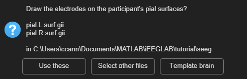
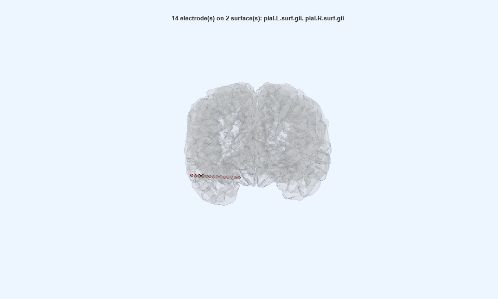


Command line
EEG = pop_ieeglab_surfaces(EEG, 'surf_files', ieeglab_brain_surfaces(EEG)); EEG = ieeglab_vis_elec(EEG); - : tick Reject outlier trials, keep the rest
(artifact blanking, line noise at 60, 120 and 180 Hz removed by fitted sines, no filter, epochs -1 to 1 s, baseline -500 to -50 ms; sites with fewer
than 5 pulses, bad contacts and contacts without coordinates removed).
ExpectA few seconds: 14 contacts, 32 epochs. The command window names RA14 as not flat before the pulse: it is kept, as the clinicians marked it good.About 2 minutes: 198 contacts, 627 epochs.Line noise: the fitted sines were compared with a notch filter, ZapLine and ZapLine-plus, on synthetic stimulation data with a known clean signal and on both datasets. They left the least error 5 to 50 ms after the pulse (0.1 uV, against 0.5 uV for the notch and 19 to 20 uV for ZapLine), and are the default.
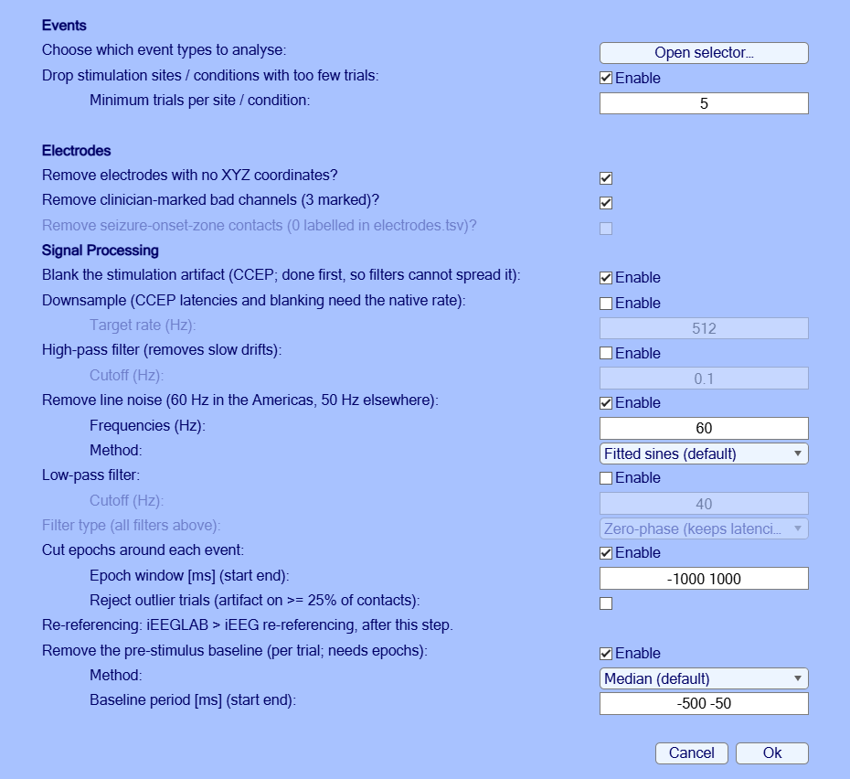

Command line
EEG = ieeglab_preprocess(EEG, struct('apply_blank', true, 'apply_notch', true, 'notch', [60 120 180], ... 'apply_epoch', true, 'epoch_window', [-1000 1000], 'reject_trials', true, ... 'remove_rare_cond', true, 'min_trials', 5, 'remove_no_coords', true, ... 'remove_bad_channels', true, 'apply_baseline', true, 'baseline_period', [-500 -50])); - .
ExpectOne row per contact, the average of all epochs in colour: flat before 0 ms, responses after it. RA14 is the row that is not flat before 0 ms.
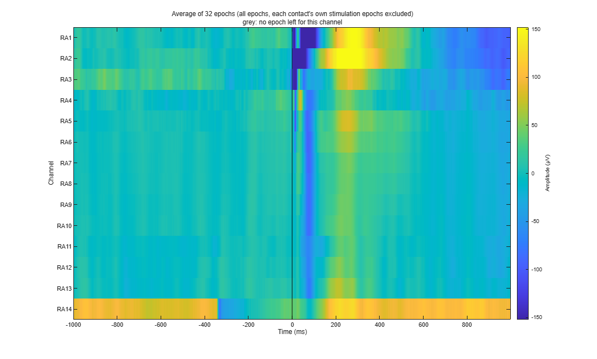

Command line
ieeglab_plot_heatmap(EEG); - : CARLA, defaults (sensitive cutoff; the stimulated pair and
2 contacts on each side left out, as in Huang et al., 2024).
ExpectA few seconds for the 3 sites.10 to 20 minutes for the 57 sites.
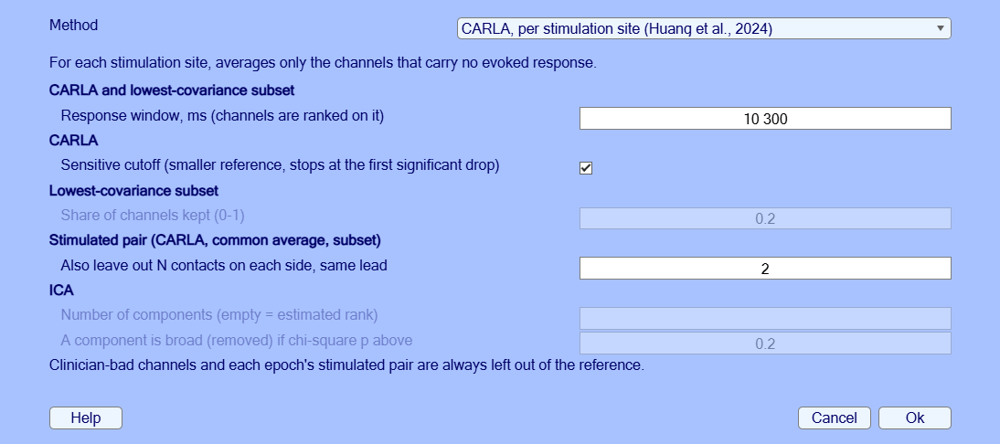

Command line
EEG = pop_ieeglab_reref(EEG, 'method', 'carla'); - : defaults (CRP over 15 ms to 1 s, matrix from CRP).
ExpectA few seconds: 19 of 36 site-contact pairs respond (the stimulation sites are next to each other on one lead, so most contacts respond).A few minutes: 3937 of 10780 site-contact pairs respond. A warning says that 392 more cannot reach significance, at sites with too few trials, and count as not tested. Against the published CRP of this participant: the same decision for 78% of the 484 published pairs tested here (87% with the published t-test at tau_R and Benjamini-Yekutieli correction, both options in this window). The results repeat exactly from run to run on the same data (fixed random seed).
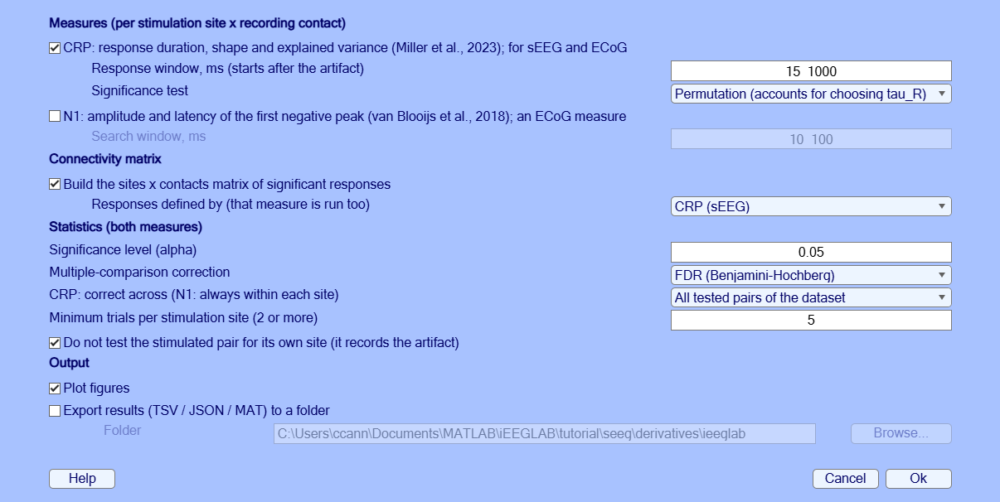
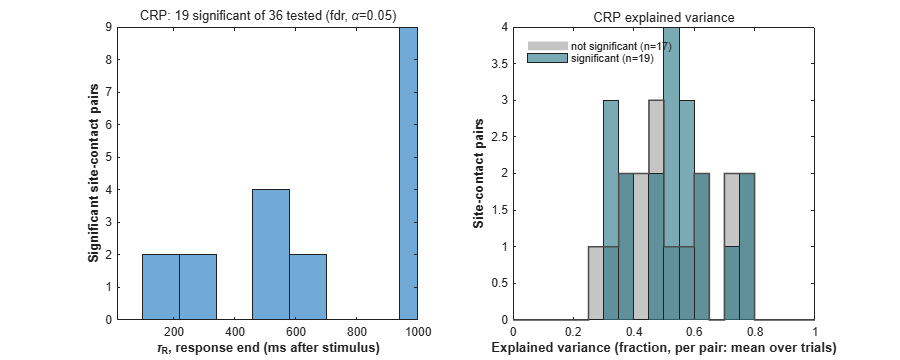


Command line
EEG = ieeglab_stats_subject(EEG, struct('run_n1', false, 'run_crp', true, 'run_matrix', true, 'matrix_source', 'crp')); - : RA3-RA4, then RA10.RX4-RX5, then RF2.
ExpectResponse duration 203 ms; the shape explains on average 63% of each trial's variance.Response duration 232 ms (published: 234 ms); the shape explains on average 98% of each trial's variance.
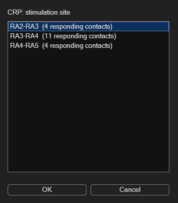
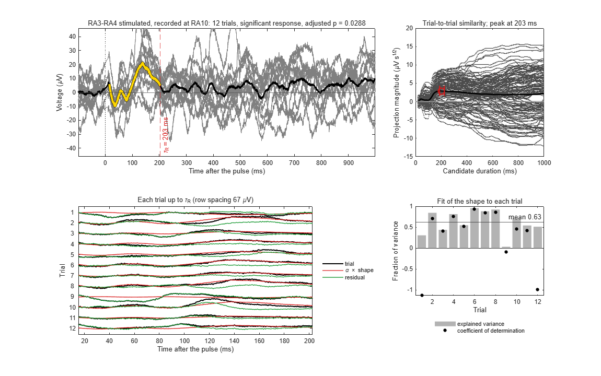
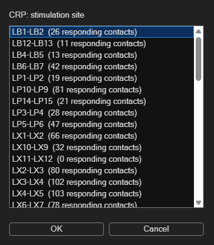
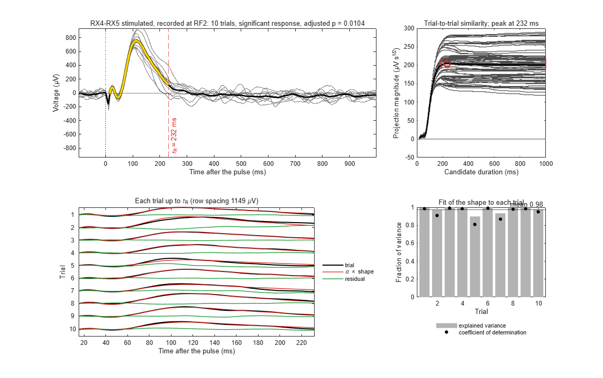
Command line
ieeglab_plot_crp(EEG, 'RA3-RA4', 'RA10');ieeglab_plot_crp(EEG, 'RX4-RX5', 'RF2'); - : Significant responses, then CRP explained variance.
ExpectEach row is a stimulated pair, each column a recording contact; a cell shows whether stimulating that pair evoked a response at that contact. Teal: a significant response; white: tested, no response; grey: not tested (the stimulated contacts themselves, bad contacts, sites with too few trials). Read a row to see where a site's stimulation reaches, a column to see which sites reach a contact. The second view colours the responding pairs by CRP explained variance, how much of each trial the response shape explains (0 to 1). 3 sites by 14 contacts.57 sites by 198 contacts.
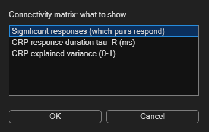
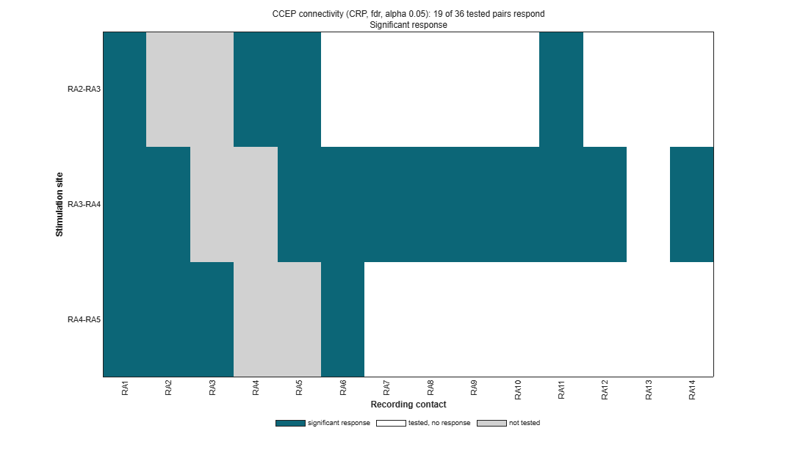
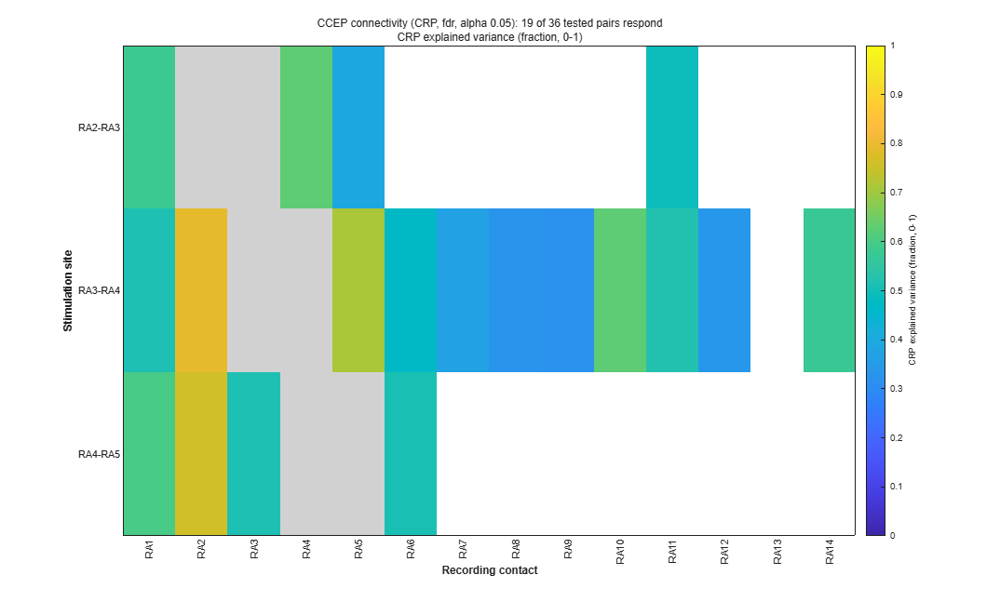
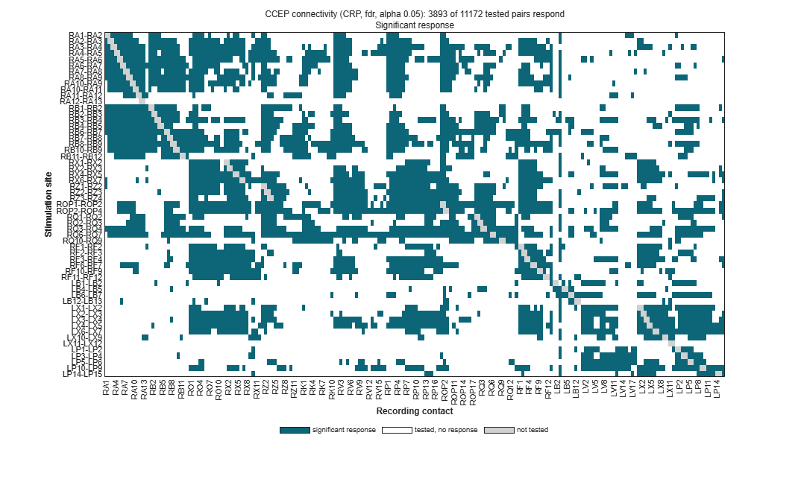
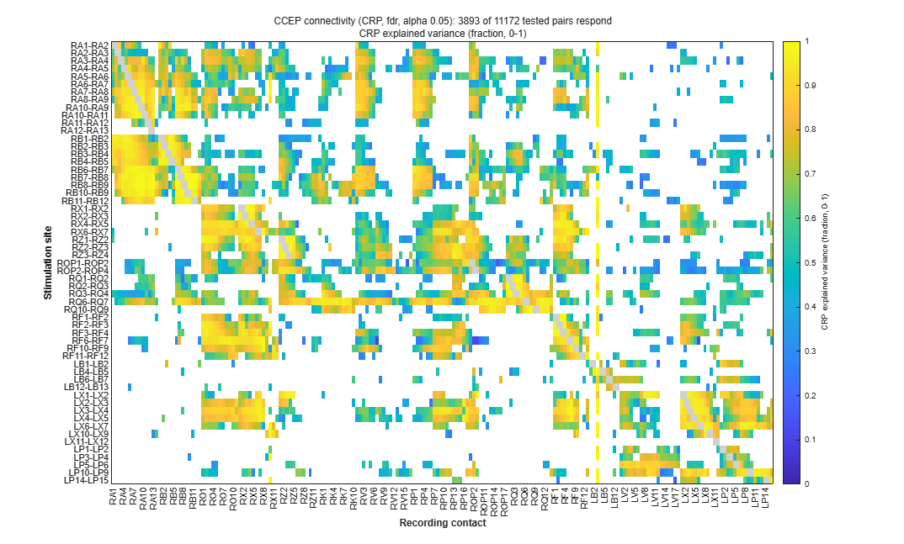
Command line
pop_ieeglab_ccep_matrix(EEG, 'response'); pop_ieeglab_ccep_matrix(EEG, 'explained_var'); - : In-degree.
ExpectEach contact coloured by the number of sites that evoke a response there.
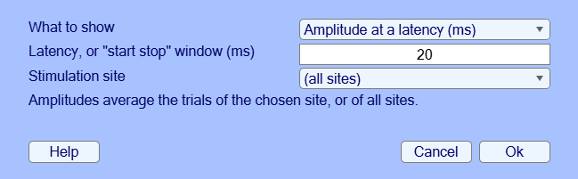
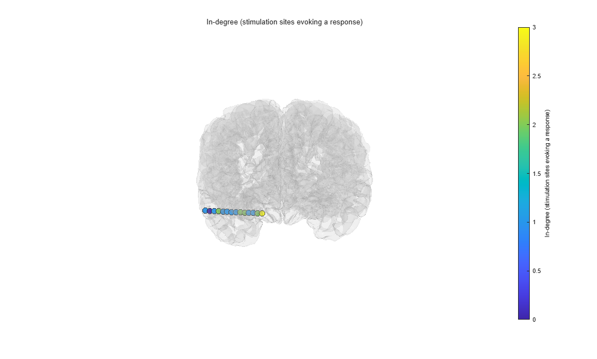
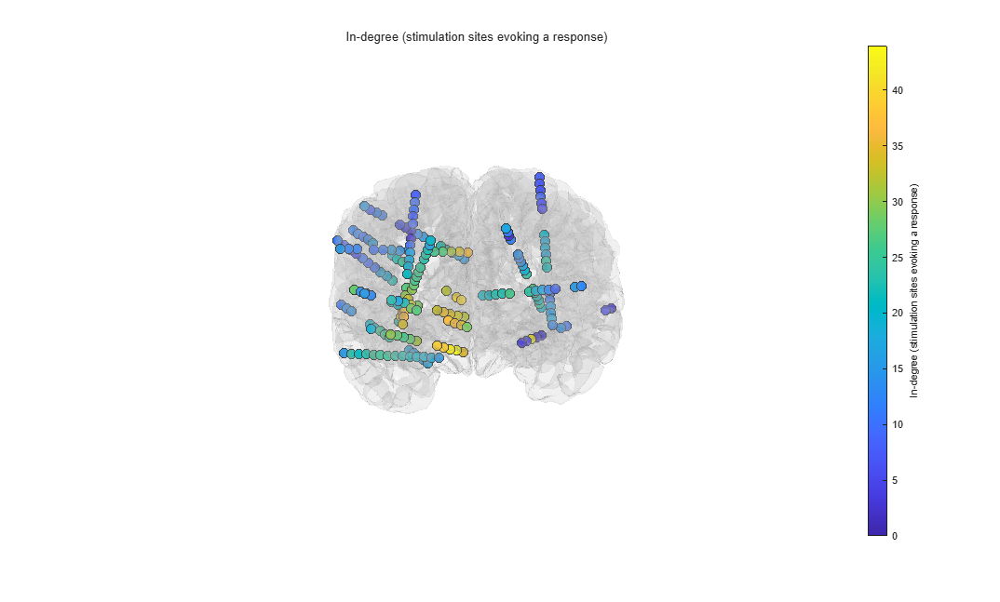
Command line
pop_ieeglab_topoplot(EEG, 'in_degree'); - : choose a folder.
ExpectTSV tables, a JSON record of the options, a MAT file.
Command line
ieeglab_export(EEG, 'results_seeg'); - : Time-frequency power and band power, keep
the defaults (5 to 200 Hz, Hann windows of 0.2 s, dB against the baseline, high-frequency activity 70-150 Hz). It only
draws figures: the dataset is not changed.
ExpectTwo figures. The first shows the power of the average of the contacts over time and frequency, and the 70-150 Hz power of every contact over time; the second, each contact's 70-150 Hz power from 0 to 1000 ms on the brain. The times from -100 to 110 ms are grey: a window that contains the pulse shows power at every frequency. Each contact's own stimulation epochs are left out of its average. No contact's 70-150 Hz power differs from its baseline by more than 0.5 dB over 0 to 1000 ms (median -0.3 dB): the grey band covers the first 110 ms, where the responses to a single pulse are largest. With Window 0.1 s the map starts at 70 ms.No contact's 70-150 Hz power differs from its baseline by more than 0.4 dB over 0 to 1000 ms (median 0.0 dB).


Command line
EEG = pop_ieeglab_spectral(EEG, 'type', 'timefreq'); - : Power spectrum of each contact, keep the defaults.
ExpectOne curve per contact on a log scale, their median in black, falling steeply with frequency, and the 70-150 Hz power on the brain. On stimulation epochs the spectrum uses only the part before the pulse: the 1 s window is shortened to 0.95 s, one segment per epoch. No peak at the line frequency or its harmonics in the median: the line noise was removed. The largest peak left is on RA3 at 180 Hz, next to the stimulated pairs.The largest peaks left are on LB3, at 60 Hz (20 times the neighbouring frequencies) and 180 Hz (12 times).


Command line
EEG = pop_ieeglab_spectral(EEG, 'type', 'spectrum'); - : choose Bipolar in Method, keep the default
(pairs farther apart than twice their lead's spacing are not formed).
ExpectEach contact minus the next one on its lead, at the midpoint of the two. The 14 contacts become 13 channels, RA1-RA2 to RA13-RA14.196 contacts become 157 channels. 21 pairs are not formed: their contacts are 7 to 14 mm apart where their lead's are 3.3 to 4.2 mm (gaps between groups of contacts, e.g. LB5-LB6, RB5-RB6); RO11 and ROP4 have no neighbour. The CCEP results are removed: they describe the old channels. A bipolar difference cancels any reference common to its two contacts, so the same channels come from the CARLA data as from the preprocessed ones.
Command line
EEG = pop_ieeglab_reref(EEG, 'method', 'bipolar'); - again: Time-frequency power and band power, on the
bipolar channels.
ExpectAs two steps before, one row per bipolar channel. RA3-RA4 has no value: RA3 or RA4 is stimulated in every epoch (sites RA2-RA3, RA3-RA4 and RA4-RA5). The others stay within 0.5 dB of their baseline.Every channel stays within 0.3 dB of its baseline (highest: RZ1-RZ2).


Command line
EEG = pop_ieeglab_spectral(EEG, 'type', 'timefreq');
4. Part B: ECoG (ds004080, sub-ccepAgeUMCU02)
- : in the iEEGLAB folder,
tutorial/ecog/sub-ccepAgeUMCU02_ses-1_task-SPESclin_run-041456_ieeg.set. : select theds004080folder (with several runs downloaded, choose run-041456). Keep the defaults.Expect20 channels at 2048 Hz, 2.9 minutes.About 2 minutes, with the progress shown: 88 ECoG channels at 2048 Hz.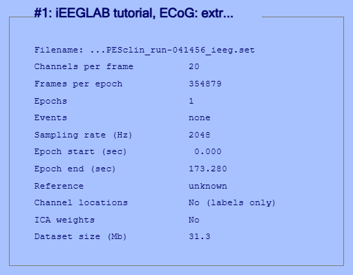

Command line
tut = fullfile(fileparts(which('eegplugin_ieeglab')), 'tutorial', 'ecog'); EEG = pop_loadset('filename', 'sub-ccepAgeUMCU02_ses-1_task-SPESclin_run-041456_ieeg.set', 'filepath', tut);rec = fullfile('ds004080', 'sub-ccepAgeUMCU02', 'ses-1', 'ieeg', 'sub-ccepAgeUMCU02_ses-1_task-SPESclin_run-041456_ieeg.vhdr'); EEG = ieeglab_import(rec); - : Ok in both windows.
Expect20 contacts with coordinates, 2 bad (F07, F08); 30 stimulations at 3 sites.88 contacts with coordinates, 2 bad; 160 stimulations at 8 sites.
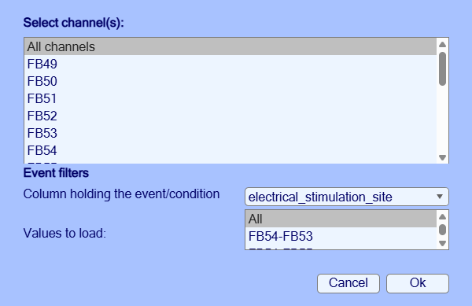

Command line
EEG = ieeglab_load(EEG, struct('event_field', 'electrical_stimulation_site')); - : Use these, then
. This dataset shares no MRI; its
coordinates are on fsaverage, so fsaverage's pial surfaces are offered.
ExpectThe grid and strip contacts on the left frontal cortex of fsaverage, seen face-on. The grid does not look regular: the dataset moved its contacts to fsaverage with a surface-based transformation that, as its README says, distorts the grid but keeps the gyral anatomy.
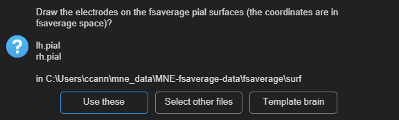
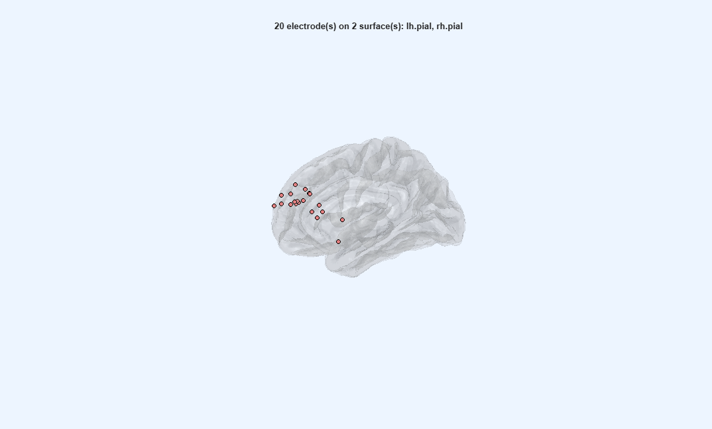


Command line
EEG = pop_ieeglab_surfaces(EEG, 'surf_files', ieeglab_brain_surfaces(EEG)); EEG = ieeglab_vis_elec(EEG); - : tick Reject outlier trials, keep the rest (line noise at 50, 100 and 150 Hz here).
ExpectA few seconds: 18 contacts, 30 epochs.About 15 s: 86 contacts, 160 epochs.
Command line
EEG = ieeglab_preprocess(EEG, struct('apply_blank', true, 'apply_notch', true, 'notch', [50 100 150], ... 'apply_epoch', true, 'epoch_window', [-1000 1000], 'reject_trials', true, ... 'remove_rare_cond', true, 'min_trials', 5, 'remove_no_coords', true, ... 'remove_bad_channels', true, 'apply_baseline', true, 'baseline_period', [-500 -50])); - .
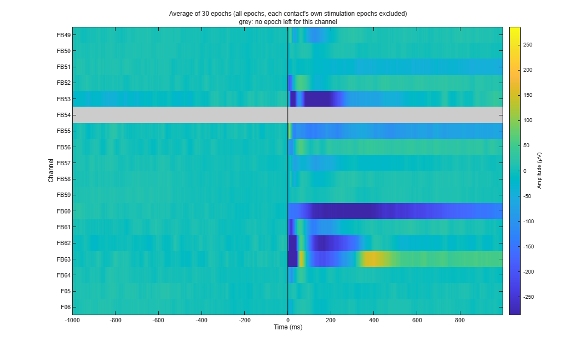

Command line
ieeglab_plot_heatmap(EEG); - : choose Common average in Method (the window opens on CARLA).
Command line
EEG = pop_ieeglab_reref(EEG, 'method', 'car'); - : defaults (N1 on ECoG, matrix from N1).
ExpectA few seconds: 10 of 48 pairs respond, N1 latency median 21 ms (14 to 99 ms).About a minute: 299 of 672 pairs respond, N1 latency median 47 ms (11 to 99 ms).
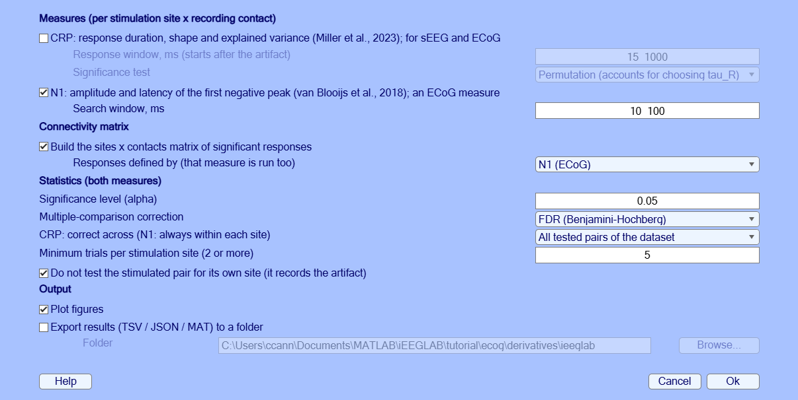
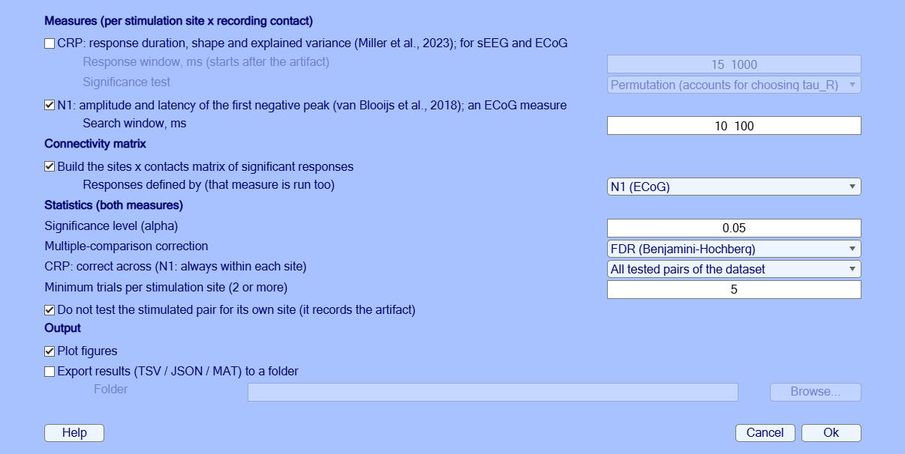
Command line
EEG = ieeglab_stats_subject(EEG, struct('run_n1', true, 'run_crp', false, 'run_matrix', true, 'matrix_source', 'n1')); - : Significant responses, then N1 latency.
ExpectAs in Part A: rows are stimulated pairs, columns recording contacts, teal for a significant N1, white for none, grey for not tested. The second view colours the responding pairs by N1 latency, in ms after the pulse.
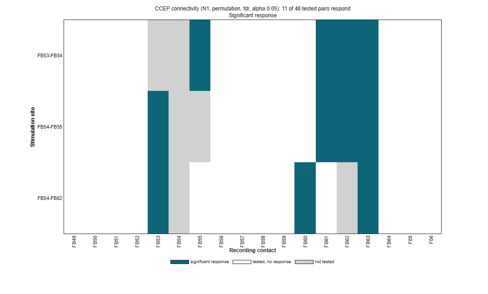
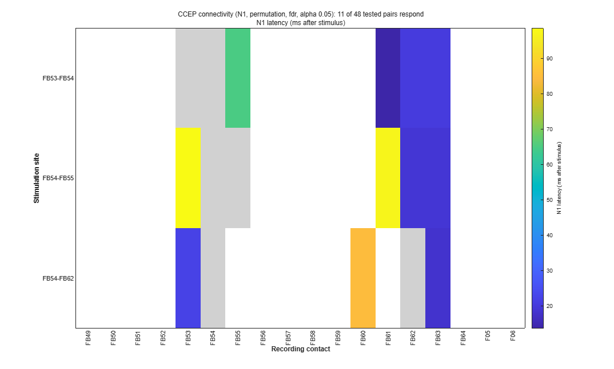


Command line
pop_ieeglab_ccep_matrix(EEG, 'response'); pop_ieeglab_ccep_matrix(EEG, 'latency_ms'); - : N1 amplitude, site FB54-FB62.
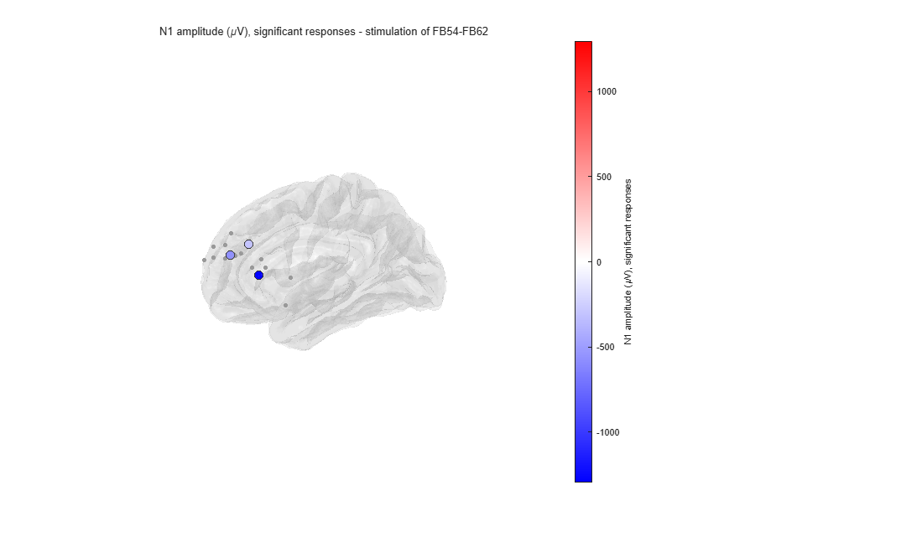

Command line
pop_ieeglab_topoplot(EEG, 'n1_amplitude', 'site', 'FB54-FB62'); ieeglab_export(EEG, 'results_ecog'); - : Time-frequency power and band power, keep
the defaults (5 to 200 Hz, Hann windows of 0.2 s, dB against the baseline, high-frequency activity 70-150 Hz). It only
draws figures: the dataset is not changed.
ExpectTwo figures. The first shows the power of the average of the contacts over time and frequency, and the 70-150 Hz power of every contact over time; the second, each contact's 70-150 Hz power from 0 to 1000 ms on the brain. The times from -100 to 110 ms are grey: a window that contains the pulse shows power at every frequency. Each contact's own stimulation epochs are left out of its average. No contact's 70-150 Hz power differs from its baseline by more than 0.3 dB over 0 to 1000 ms (highest: FB55 and FB62). FB54 has no value: it is stimulated at all three sites of the extract.No contact's 70-150 Hz power differs from its baseline by more than 0.4 dB over 0 to 1000 ms (highest: FB55).


Command line
EEG = pop_ieeglab_spectral(EEG, 'type', 'timefreq'); - : Power spectrum of each contact, keep the defaults.
ExpectOne curve per contact on a log scale, their median in black, falling steeply with frequency, and the 70-150 Hz power on the brain. On stimulation epochs the spectrum uses only the part before the pulse: the 1 s window is shortened to 0.95 s, one segment per epoch. No peak at the line frequency or its harmonics in the median: the line noise was removed. The largest peak left is on FB53 at 100 Hz, next to the stimulated FB54.No peak above 2.5 times the neighbouring frequencies on any contact.


Command line
EEG = pop_ieeglab_spectral(EEG, 'type', 'spectrum'); - : choose Bipolar in Method, keep the default
(pairs farther apart than twice their lead's spacing are not formed).
ExpectEach contact minus the next one on its lead, at the midpoint of the two. 17 contacts become 14 channels. FB56-FB57 (79 mm apart) and FB63-FB64 (29 mm) are not formed, as the lead's contacts are 13.4 mm apart: the grid's numbering runs on from one row to the next.85 contacts become 71 channels. Ten pairs are not formed, their contacts being more than twice their lead's spacing apart: the ends of grid rows (FC08-FC09, FC16-FC17, FC24-FC25, FC32-FC33, FC40-FC41, FB56-FB57) and wider gaps on other leads (F04-F05, FB63-FB64, vT3-vT4, vT6-vT7). The CCEP results are removed: they describe the old channels. A bipolar difference cancels any reference common to its two contacts, so the same channels come from the common average data as from the preprocessed ones.
Command line
EEG = pop_ieeglab_reref(EEG, 'method', 'bipolar'); - again: Time-frequency power and band power, on the
bipolar channels.
ExpectAs two steps before, one row per bipolar channel. FB53-FB54 and FB54-FB55 have no value (FB54 is stimulated in every epoch); the others stay within 0.2 dB.Every channel stays within 0.2 dB of its baseline.


Command line
EEG = pop_ieeglab_spectral(EEG, 'type', 'timefreq');
5. What to report
- A result that differs from Expect or from the picture.
- Any error: the message and the MATLAB command window.
- Anything unclear in a window.
- MATLAB and EEGLAB versions, and operating system.